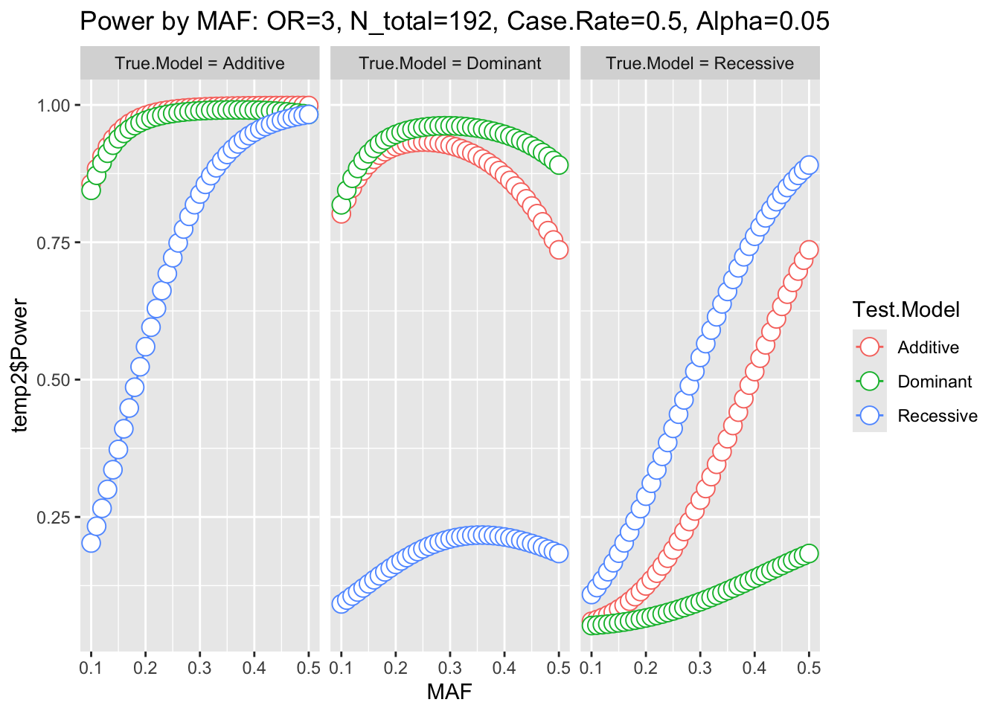
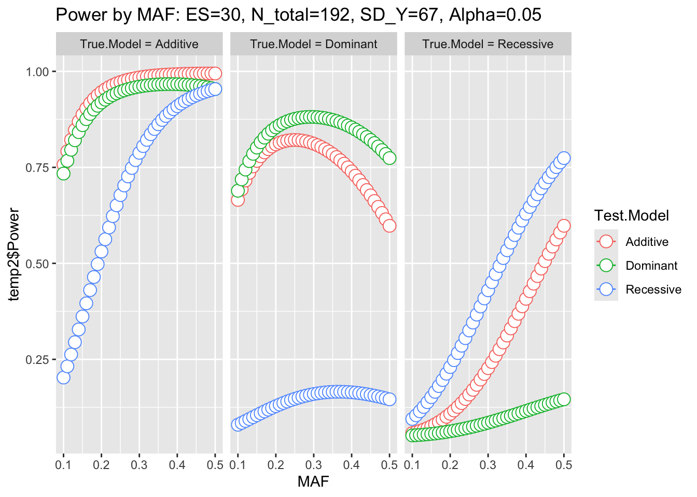
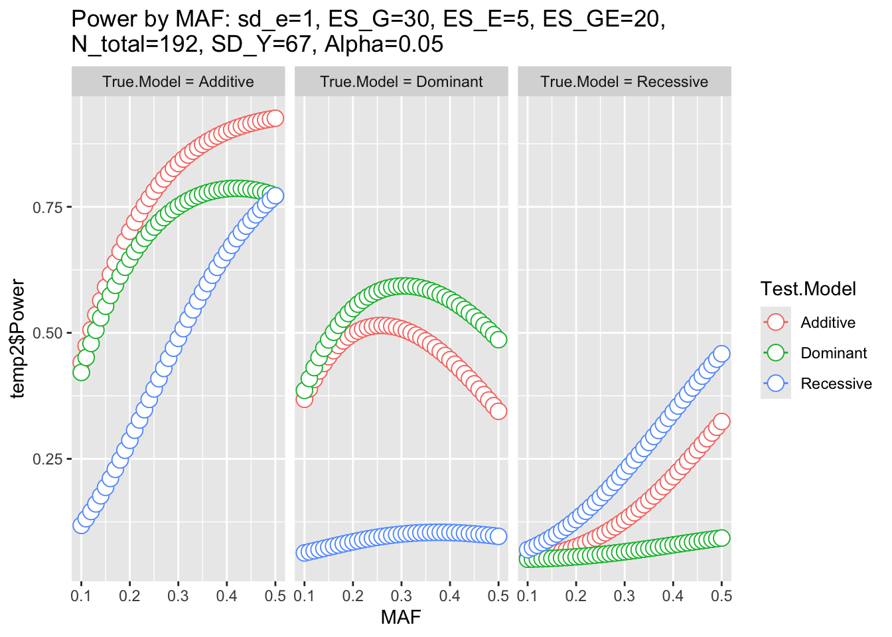
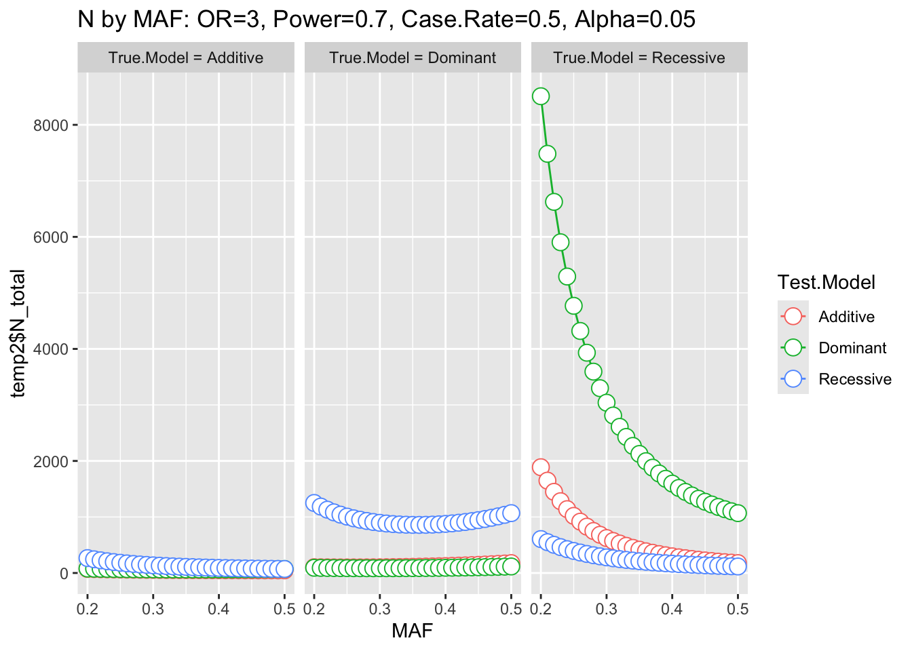
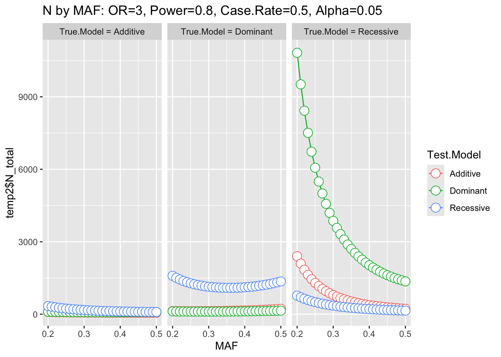
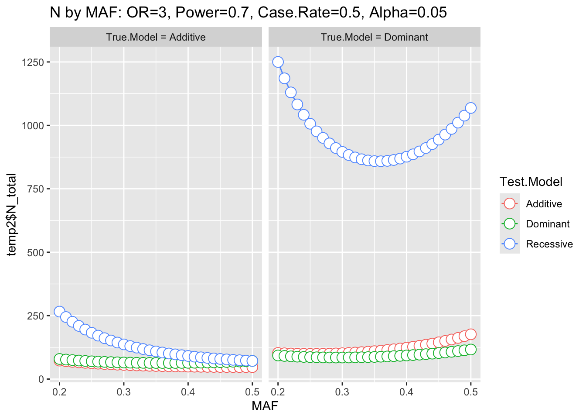
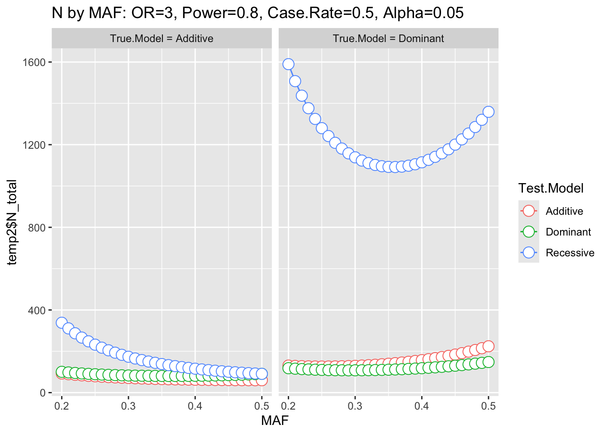
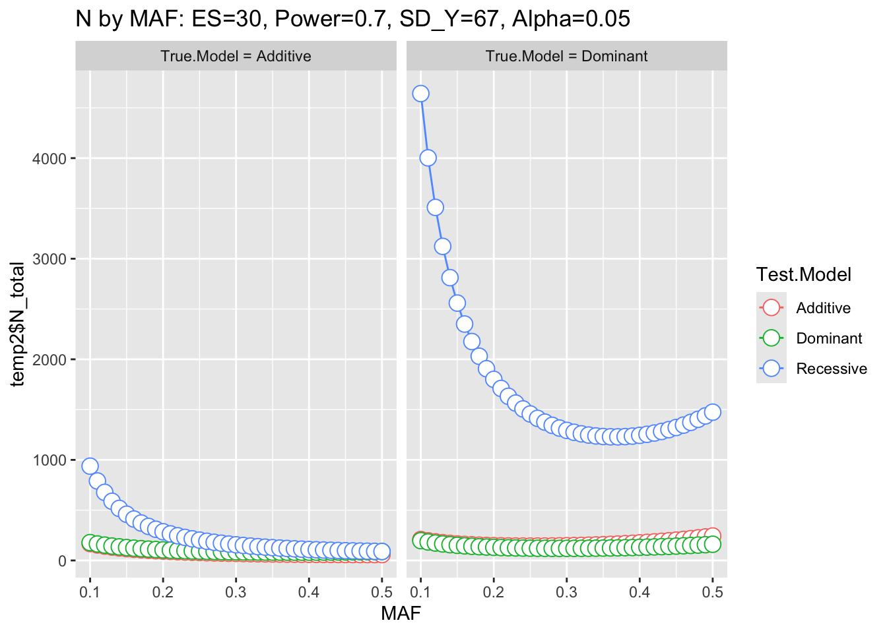
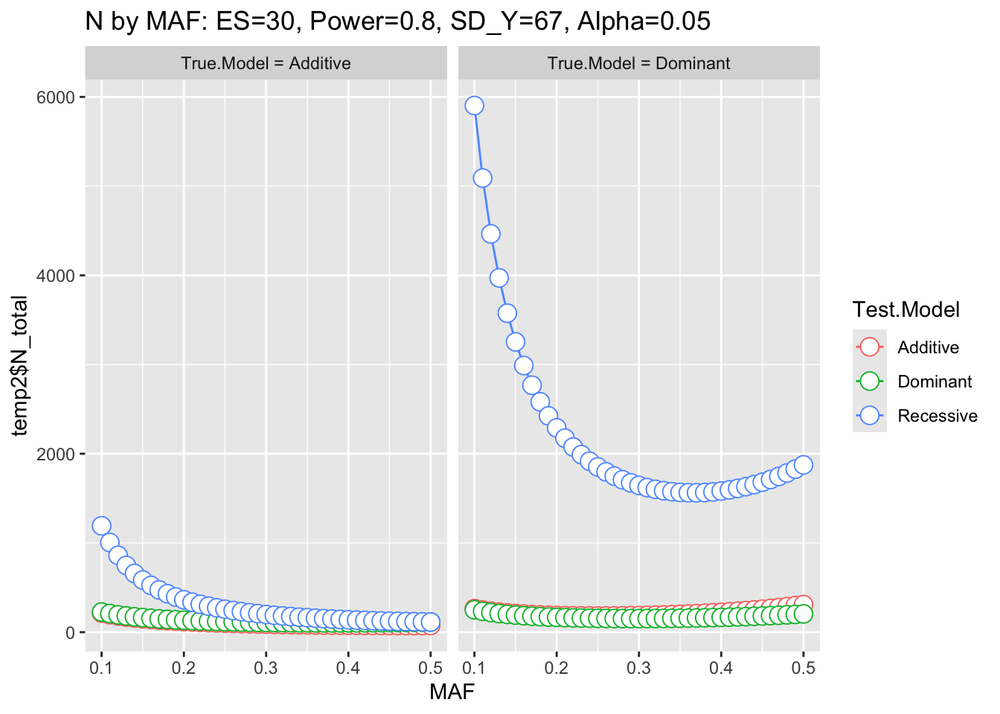
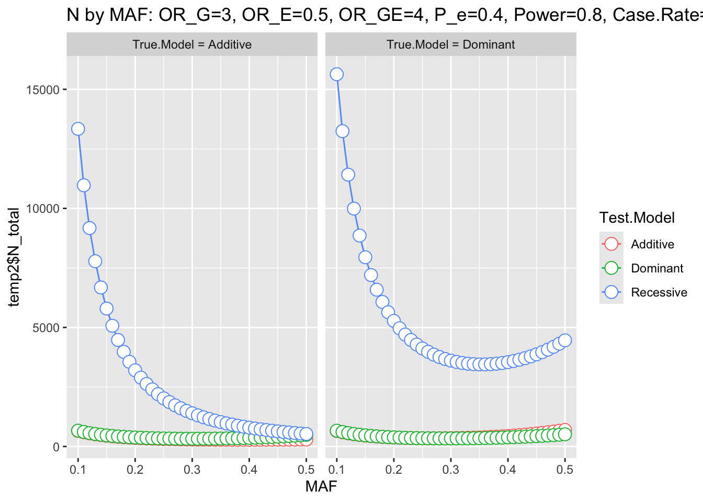

Chapter 7 GxG and GxE Interactions, Power and Sample Size Calculation
In this section we select the top 5 SNPs for continuous Z-endoxifen ratio, and demonstrate how to use PLINK to perform tests of GxG [G(Gene) by G(Gene)] and GxE [G(Gene) by E(Environment)] interactions.
# change the path below to where you saved "cshl_gwas" folder
## run in R Terminal
mydir="/path/to/cshl_gwas/Data/case_interaction"
cd $mydir7.1 Prepare Files
We can obtain the top 5 SNPs and p-values for continuous Z-endoxifen ratio (using R)
# R codes- run in R Console
qassoc=fread("../case_data/significant_snps_with_rs_for_z-endoxifen-ratio.txt",header=T) #load association results for continuous r_met
ordered_qassoc=qassoc[order(qassoc$FDR_BH),] #order association results based on p-value
head(ordered_qassoc,5) #association results for the top 5 SNPs with the 5 smallest p-values## CHR SNP UNADJ FDR_BH BP
## <int> <char> <num> <num> <int>
## 1: 22 rs8138080 3.318e-20 1.335e-17 42396371
## 2: 22 rs1062753 5.643e-19 9.347e-17 42392811
## 3: 22 rs4467371 1.365e-18 1.570e-16 42541328
## 4: 22 rs7245 4.102e-18 2.540e-16 42481849
## 5: 22 rs2284087 4.102e-18 2.540e-16 42485671We want to test Epistasis between the top 5 SNPs for continuous r_met using PLINK. As shown in the table above, the top 5 SNPs for continuous Z-endoxifen ratio are:
chr22 rs8138080
chr22 rs4467371
chr22 rs2011944
chr22 rs1062753
chr22 rs4453786The following code generates map idx & map file of the top 5 SNPs (using R)
# R codes- run in R Console
map=read.table("genotype_1k.map") #read map file
map=as.matrix(map) #create a matrix from the MAP file
top5SNPs=c("rs8138080", "rs4467371","rs2011944","rs1062753","rs4453786") #SNP ID of the top 5 SNPs
top5_idx=matrix(0,5,1) #create an empty matrix
for (i in 1:5){
top5_idx[i]=which(map[,2]==top5SNPs[i]) #index of the top 5 SNPs in the MAP file
}
as.vector(top5_idx)## [1] 948 943 927 922 928top5SNPs.map=map[top5_idx,] #MAP file of the top 5 SNPs
write.table(top5SNPs.map,"top5SNPs.map", row.names=F, col.names=F, quote=F, sep=" ") #save MAP file of the top 5 SNPsThe following code generates ped file of the top 5 SNPs (in Linux) using the index of these 5 SNPs above. Since the first 6 columns are sample information and each SNP has two alleles in .ped file, the index of each pair of allele for each SNP= [6+2(top5_idx)-1, 6+2(top5_idx)].
# bash codes- run in terminal
awk '{print $1,$2,$3,$4,$5,$6, $1901,$1902, $1891,$1892, $1859, $1860, $1849,$1850, $1861, $1862}' \
genotype_1k.ped > top5SNPs.pedPhenotype data:
7.2 Test for Epistasis (GxG)
For disease-trait population-based samples, it is possible to test for epistasis. All pairwise combinations of SNPs can be tested using PLINK (computationally feasible). For more detailed information for this test, please refer: http://zzz.bwh.harvard.edu/plink/epi.shtml
PLINK produces a model based on allele dosage for each SNP, A and B, and fits the model in the form of
Y ~ b0 + b1.A + b2.B + b3.AB + e ## # both Mac and Windows can run in Terminal
# windows users
../../Tools/PLINK/plink_win64_20231211/plink.exe \
--noweb --file top5SNPs --epistasis --epi1 1 --pheno ZR.txt --out younameit# macOS users
../../Tools/PLINK/plink_mac_20231211/plink \
--noweb --file top5SNPs --epistasis --epi1 1 --pheno ZR.txt --out younameit## PLINK v1.90b7.2 64-bit (11 Dec 2023) www.cog-genomics.org/plink/1.9/
## (C) 2005-2023 Shaun Purcell, Christopher Chang GNU General Public License v3
## Logging to younameit.log.
## Options in effect:
## --epi1 1
## --epistasis
## --file top5SNPs
## --noweb
## --out younameit
## --pheno ZR.txt
##
## Note: --noweb has no effect since no web check is implemented yet.
## 16384 MB RAM detected; reserving 8192 MB for main workspace.
## Scanning .ped file... 0%1%1%2%2%3%3%4%4%5%5%6%6%7%7%8%8%9%9%10%11%11%12%12%13%13%14%14%15%15%16%16%17%17%18%18%19%19%20%20%21%21%22%22%23%23%24%24%25%25%26%26%27%27%28%28%29%29%30%30%31%31%32%32%33%33%34%34%35%36%36%37%37%38%38%39%39%40%40%41%41%42%42%43%43%44%44%45%45%46%46%47%47%48%48%49%49%50%50%51%51%52%53%53%54%54%55%55%56%56%57%57%58%58%59%59%60%61%61%62%62%63%63%64%64%65%65%66%66%67%67%68%69%69%70%70%71%71%72%72%73%73%74%74%75%75%76%77%77%78%78%79%79%80%80%81%81%82%82%83%83%84%85%85%86%86%87%87%88%88%89%89%90%90%91%91%92%93%93%94%94%95%95%96%96%97%97%98%98%99%100%.ped scan complete (for binary autoconversion).
## Performing single-pass .bed write (5 variants, 192 people).
## 0%1%2%3%4%5%6%7%8%9%10%11%12%13%14%15%16%17%18%19%20%21%22%23%24%25%26%27%28%29%30%31%32%33%34%35%36%37%38%39%40%41%42%43%44%45%46%47%48%49%50%51%52%53%54%55%56%57%58%59%60%61%62%63%64%65%66%67%68%69%70%71%72%73%74%75%76%77%78%79%80%81%82%83%84%85%86%87%88%89%90%91%92%93%94%--file: younameit-temporary.bed + younameit-temporary.bim +
## younameit-temporary.fam written.
## 5 variants loaded from .bim file.
## 192 people (0 males, 192 females) loaded from .fam.
## 192 phenotype values present after --pheno.
## Using up to 8 threads (change this with --threads).
## Before main variant filters, 192 founders and 0 nonfounders present.
## Calculating allele frequencies... 0%1%2%3%4%5%6%7%8%9%10%11%12%13%14%15%16%17%18%19%20%21%22%23%24%25%26%27%28%29%30%31%32%33%34%35%36%37%38%39%40%41%42%43%44%45%46%47%48%49%50%51%52%53%54%55%56%57%58%59%60%61%62%63%64%65%66%67%68%69%70%71%72%73%74%75%76%77%78%79%80%81%82%83%84%85%86%87%88%89%90%91%92%93%94%95%96%97%98%99% done.
## Total genotyping rate is 0.998958.
## 5 variants and 192 people pass filters and QC.
## Phenotype data is quantitative.
## QT --epistasis to younameit.epi.qt ... 0% [processing]writing] done.
## 9 valid tests performed, summary written to younameit.epi.qt.summary .## CHR1 SNP1 CHR2 SNP2 BETA_INT STAT P
## <int> <char> <int> <char> <num> <num> <num>
## 1: 22 rs1062753 22 rs8138080 0.00395402 0.000909368 0.9759
## 2: 22 rs1062753 22 rs4467371 0.05923540 0.186978000 0.6654
## 3: 22 rs1062753 22 rs4453786 0.05197290 0.140664000 0.7076
## 4: 22 rs1062753 22 rs2011944 -0.00625238 0.002135950 0.9631
## 5: 22 rs8138080 22 rs4467371 0.06445030 0.220641000 0.6386
## 6: 22 rs8138080 22 rs4453786 0.05797350 0.174841000 0.6758
## 7: 22 rs8138080 22 rs2011944 0.00117048 0.000074603 0.9931
## 8: 22 rs4467371 22 rs2011944 -0.01796740 0.015782700 0.9000
## 9: 22 rs4453786 22 rs2011944 -0.03609540 0.062551200 0.8025The output is in the form:
CHR1 Chromosome of the first SNP
SNP1 Identifier for the first SNP
CHR2 Chromosome of the second SNP
SNP2 Identifier for the second SNP
OR_INT Odds ratio for the interaction
STAT Chi-square statistic, df=1
P Asymptotic p-value## # both Mac and Windows can run in Terminal
# windows users
../../Tools/PLINK/plink_win64_20231211/plink.exe \
--noweb --file top5SNPs --epistasis --epi1 0.05 --pheno ZR.txt --out younameit# macOS users
../../Tools/PLINK/plink_mac_20231211/plink \
--noweb --file top5SNPs --epistasis --epi1 0.05 --pheno ZR.txt --out younameit## PLINK v1.90b7.2 64-bit (11 Dec 2023) www.cog-genomics.org/plink/1.9/
## (C) 2005-2023 Shaun Purcell, Christopher Chang GNU General Public License v3
## Logging to younameit.log.
## Options in effect:
## --epi1 0.05
## --epistasis
## --file top5SNPs
## --noweb
## --out younameit
## --pheno ZR.txt
##
## Note: --noweb has no effect since no web check is implemented yet.
## 16384 MB RAM detected; reserving 8192 MB for main workspace.
## Scanning .ped file... 0%1%1%2%2%3%3%4%4%5%5%6%6%7%7%8%8%9%9%10%11%11%12%12%13%13%14%14%15%15%16%16%17%17%18%18%19%19%20%20%21%21%22%22%23%23%24%24%25%25%26%26%27%27%28%28%29%29%30%30%31%31%32%32%33%33%34%34%35%36%36%37%37%38%38%39%39%40%40%41%41%42%42%43%43%44%44%45%45%46%46%47%47%48%48%49%49%50%50%51%51%52%53%53%54%54%55%55%56%56%57%57%58%58%59%59%60%61%61%62%62%63%63%64%64%65%65%66%66%67%67%68%69%69%70%70%71%71%72%72%73%73%74%74%75%75%76%77%77%78%78%79%79%80%80%81%81%82%82%83%83%84%85%85%86%86%87%87%88%88%89%89%90%90%91%91%92%93%93%94%94%95%95%96%96%97%97%98%98%99%100%.ped scan complete (for binary autoconversion).
## Performing single-pass .bed write (5 variants, 192 people).
## 0%1%2%3%4%5%6%7%8%9%10%11%12%13%14%15%16%17%18%19%20%21%22%23%24%25%26%27%28%29%30%31%32%33%34%35%36%37%38%39%40%41%42%43%44%45%46%47%48%49%50%51%52%53%54%55%56%57%58%59%60%61%62%63%64%65%66%67%68%69%70%71%72%73%74%75%76%77%78%79%80%81%82%83%84%85%86%87%88%89%90%91%92%93%94%--file: younameit-temporary.bed + younameit-temporary.bim +
## younameit-temporary.fam written.
## 5 variants loaded from .bim file.
## 192 people (0 males, 192 females) loaded from .fam.
## 192 phenotype values present after --pheno.
## Using up to 8 threads (change this with --threads).
## Before main variant filters, 192 founders and 0 nonfounders present.
## Calculating allele frequencies... 0%1%2%3%4%5%6%7%8%9%10%11%12%13%14%15%16%17%18%19%20%21%22%23%24%25%26%27%28%29%30%31%32%33%34%35%36%37%38%39%40%41%42%43%44%45%46%47%48%49%50%51%52%53%54%55%56%57%58%59%60%61%62%63%64%65%66%67%68%69%70%71%72%73%74%75%76%77%78%79%80%81%82%83%84%85%86%87%88%89%90%91%92%93%94%95%96%97%98%99% done.
## Total genotyping rate is 0.998958.
## 5 variants and 192 people pass filters and QC.
## Phenotype data is quantitative.
## QT --epistasis to younameit.epi.qt ... 0% [processing]writing] done.
## 9 valid tests performed, summary written to younameit.epi.qt.summary .It only records results that are significant, i.e., p<=0.05, which prevents generating too many outputs.
The results are shown as below. There is nothing in the table so no Epistasis.
## Empty data.table (0 rows and 7 cols): CHR1,SNP1,CHR2,SNP2,BETA_INT,STAT...7.3 Gene-Environment Interaction (GxE)
PLINK provides the ability to test for a difference in association with a quantitative trait between two environments (or, more generally, two groups). This test is simply based on comparing the difference between two regression coefficients.
We need to specify a covariate file for this test:
cover_age.txt
Col 1 is family ID
Col 2 is sample ID
Col 3 is age (need to be in 2 groups: 1: old, 2: young)Our current covariate file age.txt is a continuous variable. So we need to manually separate it in 2 groups: old(recode as 1) and young(recode as 2). As median age is 55.5, we will assign the sample to “old” if its age is older than 55.5, otherwise to “young”.
# R codes- run in R Console
age<- fread("age.txt", header=F) # read in age
names(age)<-"age"
age_recode <- matrix(1,192,1) # create a new data with all 1
idx <- which(age$age<55.5) # which sample has age < 55.5
age_recode[idx,]<-2 # assign those with age <55.5 as 2
fwrite(age_recode,"age_binary.txt",quote=F,col.name=F, row.name=F) # save data## # both Mac and Windows can run in Terminal
# windows users
../../Tools/PLINK/plink_win64_20231211/plink.exe \
--noweb --file top5SNPs --gxe --covar covar_age.txt \
--pheno ZR.txt --out younameit
# macOS users
../../Tools/PLINK/plink_mac_20231211/plink \
--noweb --file top5SNPs --gxe --covar covar_age.txt \
--pheno ZR.txt --out younameit## bash: line 3: ../../Tools/PLINK/plink_win64_20231211/plink.exe: Permission denied
## PLINK v1.90b7.2 64-bit (11 Dec 2023) www.cog-genomics.org/plink/1.9/
## (C) 2005-2023 Shaun Purcell, Christopher Chang GNU General Public License v3
## Logging to younameit.log.
## Options in effect:
## --covar covar_age.txt
## --file top5SNPs
## --gxe
## --noweb
## --out younameit
## --pheno ZR.txt
##
## Note: --noweb has no effect since no web check is implemented yet.
## 16384 MB RAM detected; reserving 8192 MB for main workspace.
## Scanning .ped file... 0%1%1%2%2%3%3%4%4%5%5%6%6%7%7%8%8%9%9%10%11%11%12%12%13%13%14%14%15%15%16%16%17%17%18%18%19%19%20%20%21%21%22%22%23%23%24%24%25%25%26%26%27%27%28%28%29%29%30%30%31%31%32%32%33%33%34%34%35%36%36%37%37%38%38%39%39%40%40%41%41%42%42%43%43%44%44%45%45%46%46%47%47%48%48%49%49%50%50%51%51%52%53%53%54%54%55%55%56%56%57%57%58%58%59%59%60%61%61%62%62%63%63%64%64%65%65%66%66%67%67%68%69%69%70%70%71%71%72%72%73%73%74%74%75%75%76%77%77%78%78%79%79%80%80%81%81%82%82%83%83%84%85%85%86%86%87%87%88%88%89%89%90%90%91%91%92%93%93%94%94%95%95%96%96%97%97%98%98%99%100%.ped scan complete (for binary autoconversion).
## Performing single-pass .bed write (5 variants, 192 people).
## 0%1%2%3%4%5%6%7%8%9%10%11%12%13%14%15%16%17%18%19%20%21%22%23%24%25%26%27%28%29%30%31%32%33%34%35%36%37%38%39%40%41%42%43%44%45%46%47%48%49%50%51%52%53%54%55%56%57%58%59%60%61%62%63%64%65%66%67%68%69%70%71%72%73%74%75%76%77%78%79%80%81%82%83%84%85%86%87%88%89%90%91%92%93%94%--file: younameit-temporary.bed + younameit-temporary.bim +
## younameit-temporary.fam written.
## 5 variants loaded from .bim file.
## 192 people (0 males, 192 females) loaded from .fam.
## 192 phenotype values present after --pheno.
## Using 1 thread (no multithreaded calculations invoked).
## --covar: 1 case/control covariate loaded for --gxe.
## Before main variant filters, 192 founders and 0 nonfounders present.
## Calculating allele frequencies... 0%1%2%3%4%5%6%7%8%9%10%11%12%13%14%15%16%17%18%19%20%21%22%23%24%25%26%27%28%29%30%31%32%33%34%35%36%37%38%39%40%41%42%43%44%45%46%47%48%49%50%51%52%53%54%55%56%57%58%59%60%61%62%63%64%65%66%67%68%69%70%71%72%73%74%75%76%77%78%79%80%81%82%83%84%85%86%87%88%89%90%91%92%93%94%95%96%97%98%99% done.
## Total genotyping rate is 0.998958.
## 5 variants and 192 people pass filters and QC.
## Phenotype data is quantitative.
## Writing --gxe report to younameit.qassoc.gxe ... 0%1%2%3%4%5%6%7%8%9%10%11%12%13%14%15%16%17%18%19%20%21%22%23%24%25%26%27%28%29%30%31%32%33%34%35%36%37%38%39%40%41%42%43%44%45%46%47%48%49%50%51%52%53%54%55%56%57%58%59%60%61%62%63%64%65%66%67%68%69%70%71%72%73%74%75%76%77%78%79%80%81%82%83%84%85%86%87%88%89%90%91%92%93%94%95%96%97%98%99%done.The output is in the form:
CHR Chromosome number
SNP SNP identifier
NMISS1 Number of non-missing genotypes in the first group
BETA1 Regression coefficient in the first group
SE1 Standard error of coefficient in the first group
NMISS2 Number of non-missing genotypes in the second group
BETA2 Regression coefficient in the second group
SE2 Standard error of coefficient in the second group
Z_GXE Z score, test for the interaction
P_GXE Asymptotic p-value for this testThe results are shown as below:
## CHR SNP NMISS1 BETA1 SE1 NMISS2 BETA2 SE2 Z_GXE P_GXE
## <int> <char> <int> <num> <num> <int> <num> <num> <num> <num>
## 1: 22 rs1062753 96 -0.8618 0.1239 96 -0.9168 0.1229 0.31530 0.7525
## 2: 22 rs8138080 95 -0.9262 0.1211 96 -0.9368 0.1249 0.06062 0.9517
## 3: 22 rs4467371 96 -0.8660 0.1158 96 -0.9794 0.1346 0.63840 0.5232
## 4: 22 rs4453786 96 -0.8660 0.1158 96 -0.9166 0.1391 0.27920 0.7801
## 5: 22 rs2011944 96 -0.8660 0.1158 96 -0.9384 0.1331 0.41020 0.6817By looking at the P-value, there is still no GxE interaction.
7.4 Power and sample size calculation for GWAS
In GWAS studies, it’s also crucial to perform power analysis and sample size calculation. This helps researchers to determine the appropriate number of participants to detect significant genetic associations with sufficient statistical power. A review paper of sample size calculation definitions and tools can be found at Politi et. al, 2023.
A number of factors must be considered for GWAS power analysis and sample size calculations.
- Outcome: The phenotype of a study. It can be continuous or binary (case/control). For continuous pahenotype, variability is assessed with SD (standard deviation). While for binary phenotype, the paramater used is the proportion of individuals with disease.
- Effect size: The expected size of the genetic effect on the phenotype. This can be estimated based on previous studies or biological knowledge. The parameter used is odds ratio (OR) for binary phenotype or percentage of phenotypic variance for continuous phenotype.
- Significance level (alpha): The threshold used to determine statistical significance. The most common level is 0.05 (5%).
- Power (1 - beta): The probability of correctly rejecting the null hypothesis if the alternative hypothesis is true. The total power target is 0.8 (80%).
- Minor Allele frequency (MAF): The frequency of a genetic variant in a population. This information can be obtained from benchmarking databases or pilot studies. A genetic variant can be classified as common (MAF > 5%), uncommon (1–5% MAF) and rare (MAF < 1%). Typically, GWAS studies are sufficiently powered only to test common genetic variants.
- Genetic Inheritance Model: The assumed genetic model to assess the clinical effect of an SNP. Three genetic models are usually adopted: a dominant, recessive and additive model.
Below, we will use an R package genpwr to show you an example of power and sample size calculation. Package genpwr can calculate power, sample size or detectable effect size. It handle both continuous and binary outcomes, and is capable of considering GxE interactions when calculating.
Below, we will show you examples for calculating:
- power
- sample size
- detectable effect size (or odds ratio in the case of a binary outcome variable) provided that two of the three above variables are entered into the appropriate genpwr function.
First, we need to install this package from GitHub using “devtools”. The codes below show you how to install it on your laptop.
# R codes- run in R Console
# installation
#install.packages("devtools")
#library(devtools)
#install_github("camillemmoore/Power_Genetics", subdir="genpwr")
# use package
library(genpwr)We will determine the above parameters using our case study data.
7.4.1 Power calculation with binary outcome:
Based on Chapter 4, we have a case-control study with 192 individuals, including 95 cases and 97 controls (case rate of approximately 50%). The SNPs included in the GWAS analysis have MAF over a range of 0 to 0.5. (This can be calculated using plink --freq. Check Chapter 2.) But we will only focus on common alleles with MAF >0.1. We want to calculate the statistical power to detect an odds ratio of 3, for all possible combinations of true and test models, assuming an alpha of 0.05.
We need to specify the calculation is for power with calc="power" and use model="logistic" for binary outcome. The function genpwr.calc calculates power for all alleles with MAF between 0.1 and 0.5 with an increment of 0.01 based on the study design. Then a plot is generated to visualize the power change vs MAF under different genetic models.
# R codes- run in R Console
pw <- genpwr.calc(calc = "power", model = "logistic",
ge.interaction = NULL, N=192, Case.Rate=0.5, k=NULL,
MAF=seq(0.1,0.5,0.01), OR=3, Alpha=0.05,
True.Model=c("Additive","Dominant", "Recessive"),
Test.Model=c("Additive","Dominant", "Recessive"))
power.plot(pw)## Warning: Use of `temp2$Power` is discouraged.
## ℹ Use `Power` instead.## Warning: Use of `temp2$Test.Model` is discouraged.
## ℹ Use `Test.Model` instead.## Warning: Use of `temp2$Power` is discouraged.
## ℹ Use `Power` instead.## Warning: Use of `temp2$Test.Model` is discouraged.
## ℹ Use `Test.Model` instead.
7.4.1.1 Case study with continuous outcome:
For continuous phenotype, we need to obtain the phenotype SD instead of case rate. The codes below read in the phenotype data from Chapter 3 and calculate the standard deviation for all metabolites.
# R codes- run in R Console
# Read data
phenotype=read.table("../case_data/phenotype.txt", header=T)
head(phenotype)## sample_ID e.a.oh.tam e.endoxifen z.4.oh.tam_3.oh.tam z.a.oh.tam
## 1 3TX 0.390 0 2.10 0.000
## 2 23TX 0.546 0 1.77 0.041
## 3 41TX 0.531 0 1.46 0.000
## 4 54TX 0.496 0 2.19 0.063
## 5 76TX 0.339 0 1.67 0.079
## 6 94TX 0.303 0 1.10 0.064
## z.endoxifen_3.oh.ndm.tam V4.oh.ndm.tam.gluc V4.oh.tam.o.gluc
## 1 7.62 0.773 0.093
## 2 4.31 0.888 0.132
## 3 4.09 0.725 0.147
## 4 2.95 0.329 0.080
## 5 3.77 1.719 0.462
## 6 1.21 0.104 0.027
## V4prim.oh.ndm.tam V4prim.oh.tam ndm.tam tam.n.gluc tam.n.oxide tamoxifen
## 1 3.724 3.67 158.63 0.09 9.51 136.63
## 2 2.670 2.39 174.85 0.34 7.30 110.38
## 3 3.665 3.89 195.63 0.10 9.79 145.73
## 4 6.624 4.10 280.15 0.21 21.05 169.76
## 5 6.374 4.18 300.06 0.47 27.72 194.25
## 6 6.182 3.51 303.72 0.31 28.71 167.92
## z.endoxifen_ratio
## 1 0.024134673
## 2 0.014308285
## 3 0.011294447
## 4 0.006079783
## 5 0.007010690
## 6 0.002365497## e.a.oh.tam e.endoxifen z.4.oh.tam_3.oh.tam
## 1.752448e-01 6.007286e-02 1.232891e+00
## z.a.oh.tam z.endoxifen_3.oh.ndm.tam V4.oh.ndm.tam.gluc
## 3.340708e-02 3.504672e+00 1.025989e+00
## V4.oh.tam.o.gluc V4prim.oh.ndm.tam V4prim.oh.tam
## 1.575704e-01 2.156651e+00 1.371287e+00
## ndm.tam tam.n.gluc tam.n.oxide
## 1.040414e+02 2.775679e-01 7.363288e+00
## tamoxifen z.endoxifen_ratio
## 6.701619e+01 7.612795e-03We will use tamoxifen as an example of continuous phenotype. The SD of tamoxifen is approximately 67.
We still focus on common alleles with MAF >0.1. and the goal is to calculate the statistical power to detect an effect size of 30 (~45% of the phenotype SD) under alpha of 0.05. Note that the effect size (ES) can’t exceed the total SD of outcome.
Similar as in binary study, we use calc="power" but specify continuous study model with model="linear".
# R codes- run in R Console
pw <- genpwr.calc(calc = "power", model = "linear",
N=192, sd_y=67, k=NULL,
MAF=seq(0.1, 0.5, 0.01), ES=30, Alpha=0.05,
True.Model=c("Additive","Dominant", "Recessive"),
Test.Model=c("Additive","Dominant", "Recessive"))
power.plot(pw)## Warning: Use of `temp2$Power` is discouraged.
## ℹ Use `Power` instead.## Warning: Use of `temp2$Test.Model` is discouraged.
## ℹ Use `Test.Model` instead.## Warning: Use of `temp2$Power` is discouraged.
## ℹ Use `Power` instead.## Warning: Use of `temp2$Test.Model` is discouraged.
## ℹ Use `Test.Model` instead.
7.4.1.2 Continuous study with continuous GxE interaction:
In addition to power calculation for main effects model, genpwr is also capable to calculate power for studies with GxE interactions. We just show you a continuous study with continuous GxE interactions here. You can also practice for a binary study with continuous GxE interactions, or study with binary GxE interactions.
Besides the parameters above, we need to specify the effect size for both main effect environmental variables and GxE interactions. Also note that the sum of all effect size parameters shouldn’t exceed the total SD of phenotype. We also specify the type of GxE interactions with ge.interaction="continuous".
# R codes- run in R Console
pec <- genpwr.calc(calc = "power", model = "linear",
ge.interaction = "continuous",
N=192, sd_y=67, MAF=seq(0.1,0.5,0.01), ES_G=30,
ES_E=5, ES_GE=20, sd_e =1, Alpha=0.05,
True.Model=c("Additive","Dominant", "Recessive"),
Test.Model=c("Additive","Dominant", "Recessive"))
power.plot(pec)## Warning: Use of `temp2$Power` is discouraged.
## ℹ Use `Power` instead.## Warning: Use of `temp2$Test.Model` is discouraged.
## ℹ Use `Test.Model` instead.## Warning: Use of `temp2$Power` is discouraged.
## ℹ Use `Power` instead.## Warning: Use of `temp2$Test.Model` is discouraged.
## ℹ Use `Test.Model` instead.
7.4.2 Sample size calculation
For sample size calculation, we want to determine an appropriate study size that is sufficient to detect the effect size/OR under a desired power.
7.4.2.1 Case study with binary outcome:
We still use the above binary case study with 192 individuals. Assuming the case rate is 50% and MAF of variants is 0.2-0.5, we want to calculate the sample size needed to detect an odds ratio of 3 with a power of 0.7 or 0.8.
We need to spcific calculation type with calc="ss" and Power=c(0.7,0.8).
# R codes- run in R Console
ss <- genpwr.calc(calc = "ss", model = "logistic", ge.interaction = NULL,
OR=3, Case.Rate=0.5, k=NULL,
MAF=seq(0.2, 0.5, 0.01), Power=c(0.7,0.8), Alpha=0.05,
True.Model=c("Additive","Dominant", "Recessive"),
Test.Model=c("Additive","Dominant", "Recessive"))
ss.plot(ss)## Warning: Use of `temp2$N_total` is discouraged.
## ℹ Use `N_total` instead.## Warning: Use of `temp2$Test.Model` is discouraged.
## ℹ Use `Test.Model` instead.## Warning: Use of `temp2$N_total` is discouraged.
## ℹ Use `N_total` instead.## Warning: Use of `temp2$Test.Model` is discouraged.
## ℹ Use `Test.Model` instead.
## Warning: Use of `temp2$N_total` is discouraged.
## ℹ Use `N_total` instead.
## Use of `temp2$Test.Model` is discouraged.
## ℹ Use `Test.Model` instead.## Warning: Use of `temp2$N_total` is discouraged.
## ℹ Use `N_total` instead.## Warning: Use of `temp2$Test.Model` is discouraged.
## ℹ Use `Test.Model` instead.
As a general rule, under the same assumptions, the dominant model needs the smallest sample size to achieve adequate statistical power, whereas the recessive model is the one that requires the largest number of participants.
We could check the dominant and additive model only and ignore the recessive model.
# R codes- run in R Console
ss <- genpwr.calc(calc = "ss", model = "logistic", ge.interaction = NULL,
OR=3, Case.Rate=0.5, k=NULL,
MAF=seq(0.2, 0.5, 0.01), Power=c(0.7,0.8), Alpha=0.05,
True.Model=c("Additive","Dominant"),
Test.Model=c("Additive","Dominant", "Recessive"))
ss.plot(ss)## Warning: Use of `temp2$N_total` is discouraged.
## ℹ Use `N_total` instead.## Warning: Use of `temp2$Test.Model` is discouraged.
## ℹ Use `Test.Model` instead.## Warning: Use of `temp2$N_total` is discouraged.
## ℹ Use `N_total` instead.## Warning: Use of `temp2$Test.Model` is discouraged.
## ℹ Use `Test.Model` instead.
## Warning: Use of `temp2$N_total` is discouraged.
## ℹ Use `N_total` instead.
## Use of `temp2$Test.Model` is discouraged.
## ℹ Use `Test.Model` instead.## Warning: Use of `temp2$N_total` is discouraged.
## ℹ Use `N_total` instead.## Warning: Use of `temp2$Test.Model` is discouraged.
## ℹ Use `Test.Model` instead.
For both additive and dominant models, a sample size of about 200 individuals is sufficient to detect an OR of 3 if we test for additive or dominant genetic effects.
7.4.2.2 Case study with continuous outcome
Similar as above, we calculate the sample size needed to detect an effect size of 30 with 70% or 80% power. The continuous phenotype used is still tamoxifen with SD=76.
# R codes- run in R Console
ss <- genpwr.calc(calc = "ss", model = "linear",
sd_y=67, k=NULL, Power=c(0.7,0.8),
MAF=seq(0.1, 0.5, 0.01), ES=30, Alpha=0.05,
True.Model=c("Additive","Dominant"),
Test.Model=c("Additive","Dominant", "Recessive"))
ss.plot(ss)## Warning: Use of `temp2$N_total` is discouraged.
## ℹ Use `N_total` instead.## Warning: Use of `temp2$Test.Model` is discouraged.
## ℹ Use `Test.Model` instead.## Warning: Use of `temp2$N_total` is discouraged.
## ℹ Use `N_total` instead.## Warning: Use of `temp2$Test.Model` is discouraged.
## ℹ Use `Test.Model` instead.
## Warning: Use of `temp2$N_total` is discouraged.
## ℹ Use `N_total` instead.
## Use of `temp2$Test.Model` is discouraged.
## ℹ Use `Test.Model` instead.## Warning: Use of `temp2$N_total` is discouraged.
## ℹ Use `N_total` instead.## Warning: Use of `temp2$Test.Model` is discouraged.
## ℹ Use `Test.Model` instead. #### Binary study with binary GxE interactions
# R codes- run in R Console
sse <- genpwr.calc(calc = "ss", model = "logistic",
Case.Rate=0.5, ge.interaction = "binary", Power=0.8,
MAF=seq(0.1,0.5,0.01), OR_G=3,
OR_E=0.5, OR_GE=4, P_e = 0.4, Alpha=0.05,
True.Model=c("Additive","Dominant"),
Test.Model=c("Additive","Dominant", "Recessive"))
ss.plot(sse)## Warning: Use of `temp2$N_total` is discouraged.
## ℹ Use `N_total` instead.## Warning: Use of `temp2$Test.Model` is discouraged.
## ℹ Use `Test.Model` instead.## Warning: Use of `temp2$N_total` is discouraged.
## ℹ Use `N_total` instead.## Warning: Use of `temp2$Test.Model` is discouraged.
## ℹ Use `Test.Model` instead.